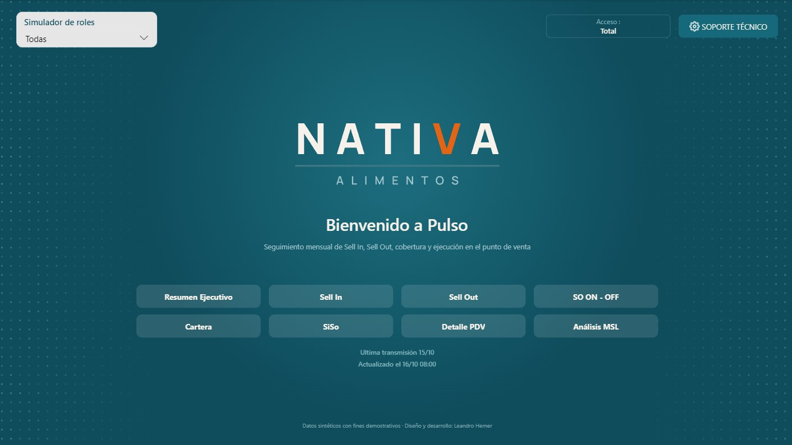
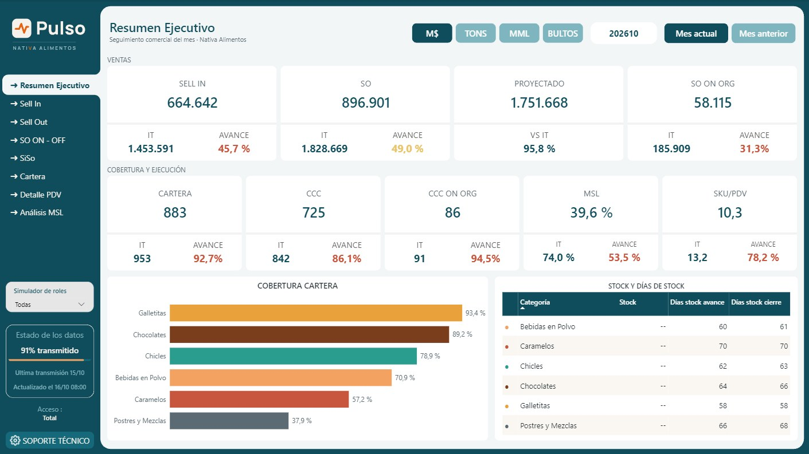
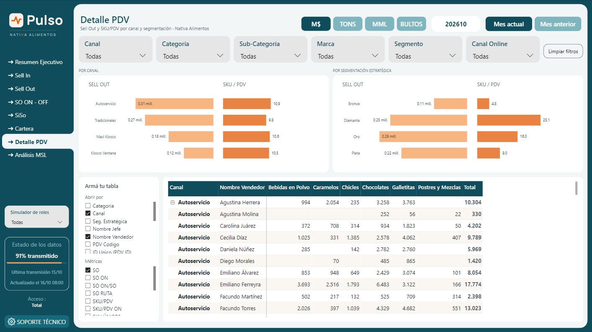

Pulso – Tablero comercial
- Power BI
- DAX
- Modelado de datos
- Diseño de información
- Seguridad por filas (RLS)
Pulso es la versión para portfolio de un tablero comercial que usa a diario el equipo de ventas de Mondelēz International. Marca ficticia y datos sintéticos.
Reúne el seguimiento del mes en un solo lugar: Sell In (facturación a distribuidores), Sell Out (ventas al punto de venta), cobertura de cartera, surtido mínimo (MSL) y stock, siempre contra objetivo y con semáforos que muestran qué viene atrasado.
Cómo está hecho
- Medidas en DAX para avance contra objetivo y semáforos de cumplimiento.
- Un selector de unidad de medida (pesos, toneladas, MML y bultos) que impacta en todo el tablero.
- "Armá tu tabla": parámetros de campo para que cada usuario elija cómo abrir la matriz y qué métricas ver.
- Estado de los datos en cada página: porcentaje de transmisión y fecha de actualización, para saber si los números están completos antes de leerlos.
- Gráficos en espejo en Detalle PDV: Sell Out y SKU/PDV enfrentados por canal y por segmentación, para comparar volumen contra profundidad de surtido.
- Simulador de roles: en producción el acceso se controla con seguridad a nivel de fila (RLS). Acá un selector permite ver el tablero como lo vería cada distribuidora.
Tablero interactivo
Arrancá por el simulador de roles, arriba a la izquierda: elegí una distribuidora y fijate cómo cambian los números. Se navega desde la portada o desde el menú lateral, y el botón de abajo a la derecha lo abre en pantalla completa.
Algunas pantallas


